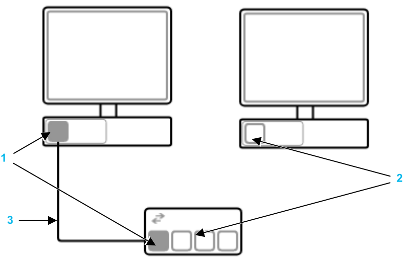

Connect devices using their Ethernet ports:

Legend:
Connected Ethernet ports
Unconnected Ethernet ports
"Wire" indicating a physical connection
To connect two devices:
Select a port on the first device.
Hold down the left mouse button.
Drag the cursor to the destination port on the second device.
Release the mouse button. The connection is created.
To change the connection point of an existing connection:
Click on the connection wire. A round handle appears at each end of the wire.
Select and drag a handle to the destination port on the second device.
Release the mouse button. The connection is changed.